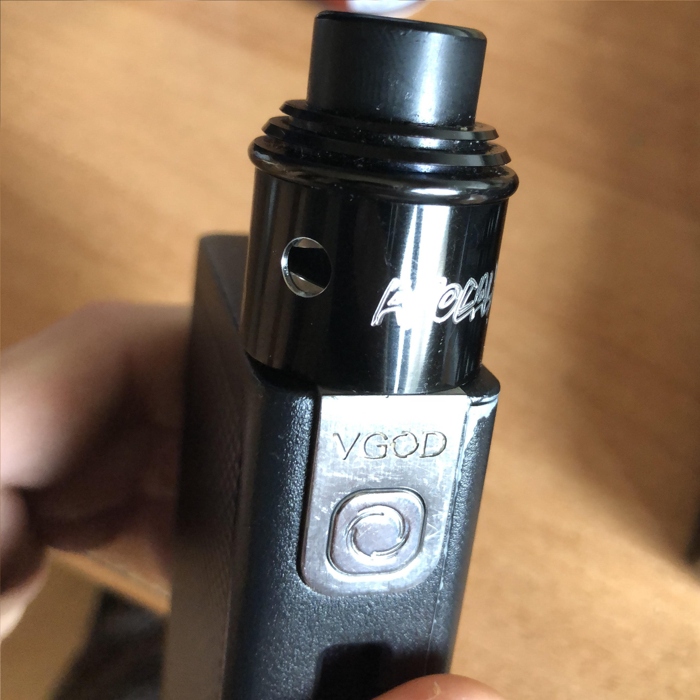
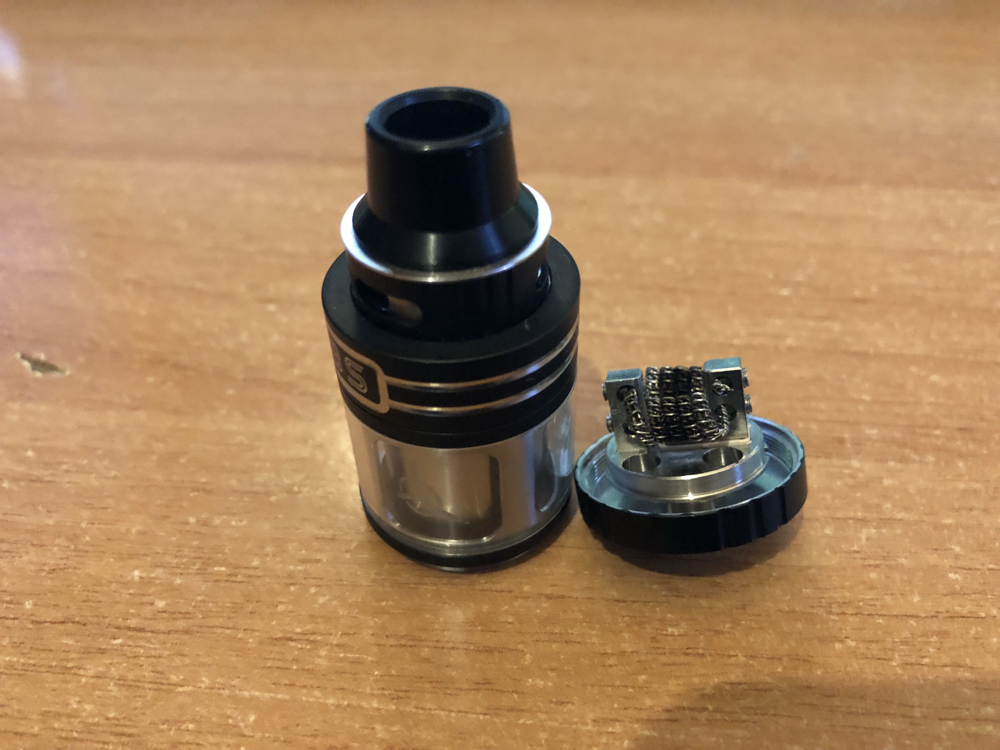
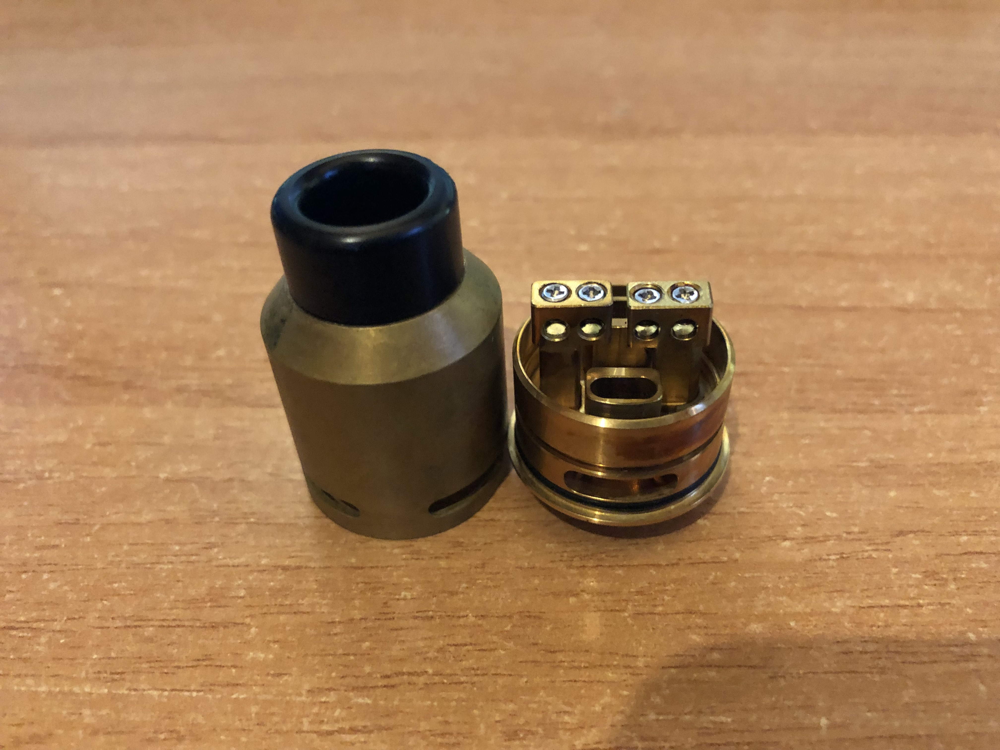
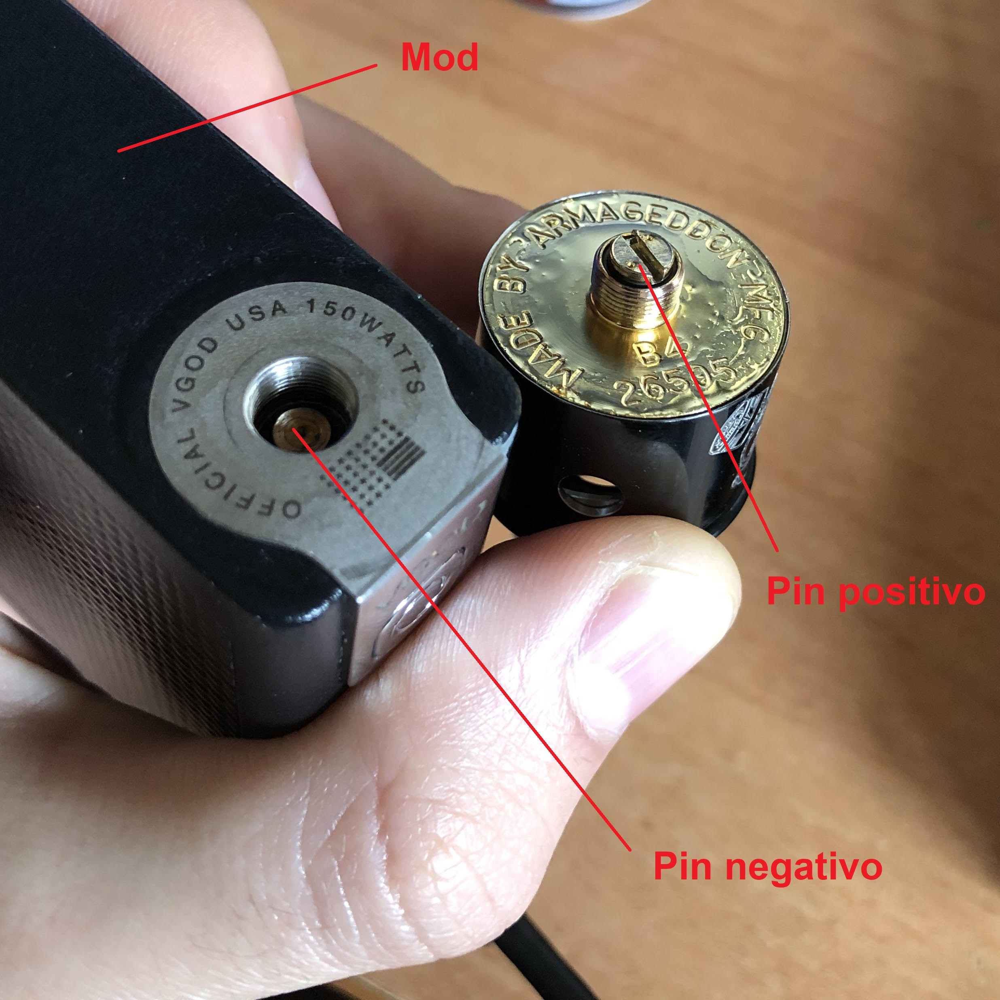
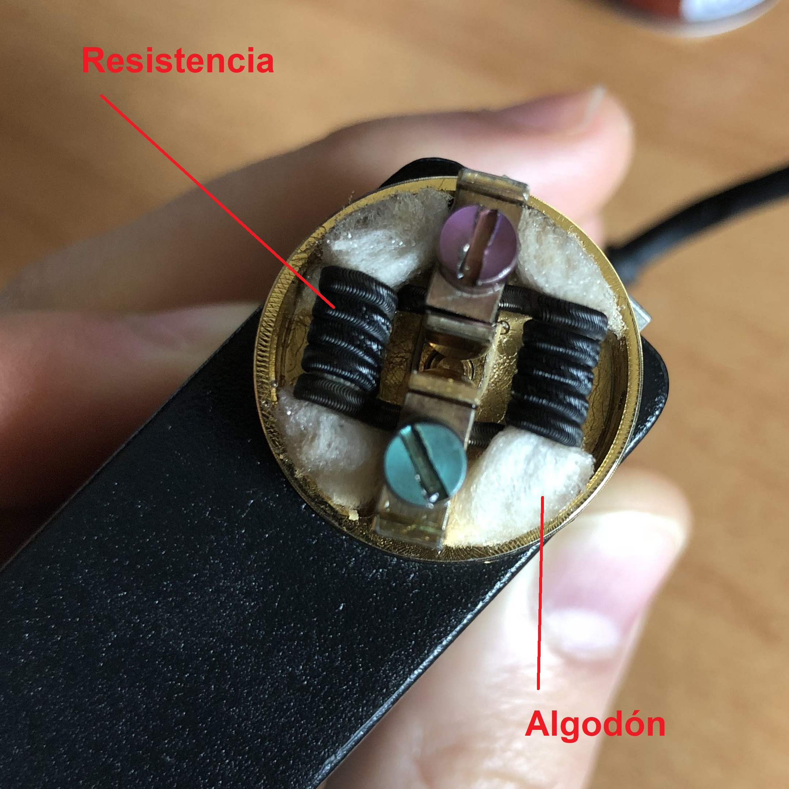
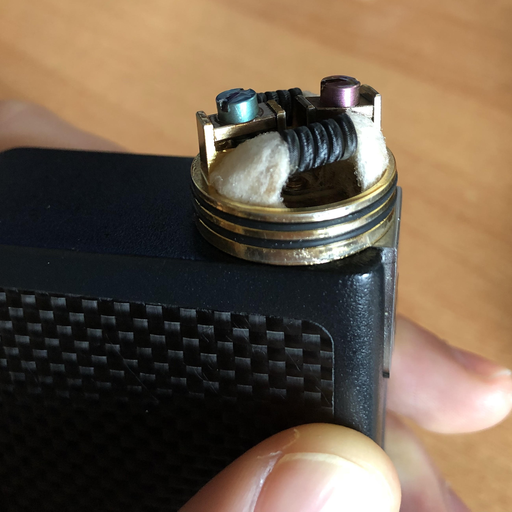
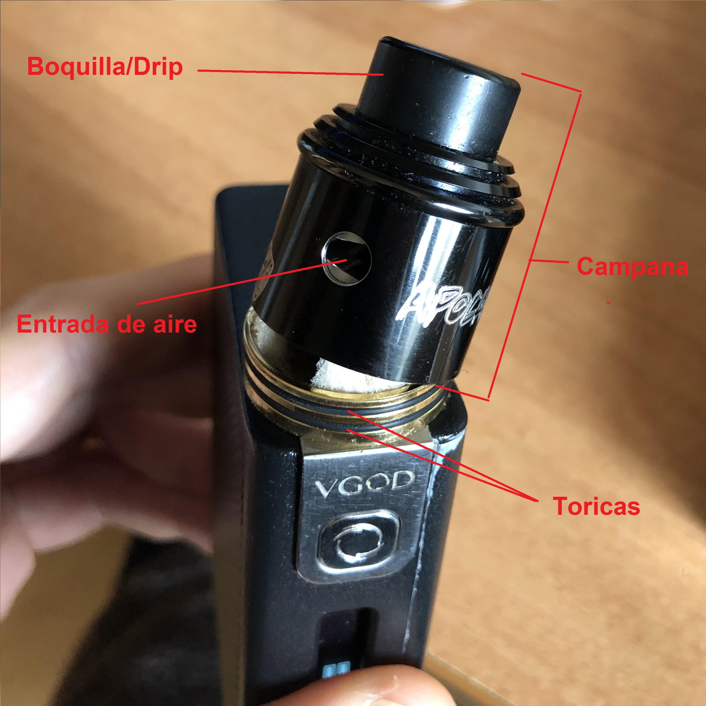

Atomizador
El atomizador es el elemento principal del cigarrillo electrónico. Éste se sitúa en la parte superior del vaporizador en su conjunto, estando enroscado directamente en el mod. El atomizador, junto con las muescas que se enroscan al mod, también tiene un "pin" o pequeño tornillo en su parte inferior que hace contacto con el mod, para que éste le subministre energía.
Atomizadores según su tipo de resistencia
Hablamos de diferentes tipos de atomizadores dependiendo de cuál uso le quieras dar, y cuál es la estética que más te gusta.
Atomizadores: Éstos vienen equipados con un soporte donde se pueden introducir resistencias hechas por nosotros mismos o compradas a fabricantes profesionales de resistencias. En los atomizadores se le exige al vapeador que los use, un mínimo de experiencia en el sector, disponibilidad para, cuando se necesite, limpiar cuidadosamente las resistencias y cambiar los algodones. Este tipo de atomizadores es escogido por los vapeadores más experimentados ya que te ofrece la posibilidad de cambiar las resistencias y el algodón a tu gusto, haciendo de tu vaporizador un elemento más único y personalizable.
Atomizadores claromizadores: Los atomizadores de tipo claromizador, tienen como principal característica, que no disponen de opción para utilizar resistencias artesanales, sino que tienen en su parte interior un módulo para enroscar resistencias comerciales. Las resistencias comerciales se tienen que comprar a parte en una tienda especializada y el consumidor tiene la opción de escoger el tipo de resistencia que quiere, según sus necesidades. Este tipo de atomizadores son muy utilizados sobre todo para usuarios no muy expertos que quieren empezar con algo práctico y con poca complicación de uso y mantenimiento.
Atomizadores según el tipo de tanque/modalidad de uso
En este apartado encontramos muchos tipos (ya que hay atomizadores que derivan de los tratados a continuación). Los principales son:
RTA: (Rebuildable Tank Atomizer) Estos atomizadores disponen de un pequeño depósito que nos permite almacenar el líquido que queramos vapear. Una vez el depósito se consume, este atomizador nos permite volver a rellenarlo con otro líquido o con el anterior. Este tipo de atomizadores está pensado para gente que busca comodidad y autonomía ya que la durabilidad del líquido dentro del depósito suele permanecer un largo plazo de tiempo dependiendo también, de la capacidad del tanque.

RDA: (Rebuildable Dripping Atomizer) Este tipo de atomizadores a diferencia de los anteriores no disponen de un depósito para almacenar el líquido. En este caso el líquido se almacena únicamente en los algodones que están introducidos dentro de las resistencias. Al acto de poner el líquido directamente en las resistencias y al método de vapeo en RDA, se le llama “dripeo” o “dripear”.
Los atomizadores RDA están pensados para lograr un sabor más intenso y más vapor, ya que el recorrido del aire (al simplemente entrar por las entradas de aire y ser expulsado de forma casi inmediata por la boquilla/drip) es menor que en un atomizador RTA, que el circuito por donde el aire tiene que pasar desde que entra por las entradas de aire hasta su salida es mas longevo. En RDA simplemente inhalas instantáneamente el vapor producido por las resistencias.

El atomizador es el lugar donde se recogen muchos de los componentes más importantes del vapeador. Contiene un pin en su parte inferior junto con la rosca, un soporte para contener la/s resistencias, algodón, la campana con sus tóricas y por último la boquilla o "drip".
Su funcionamiento consiste en lo siguiente; el pin positivo del atomizador se pone en contacto con el pin negativo del mod generando energía, que recorrerá hasta el soporte donde se sitúan las resistencias. Las resistencias inmediatamente incrementan su temperatura generando una vaporización del líquido que se encuentra alojado en los algodones.
  